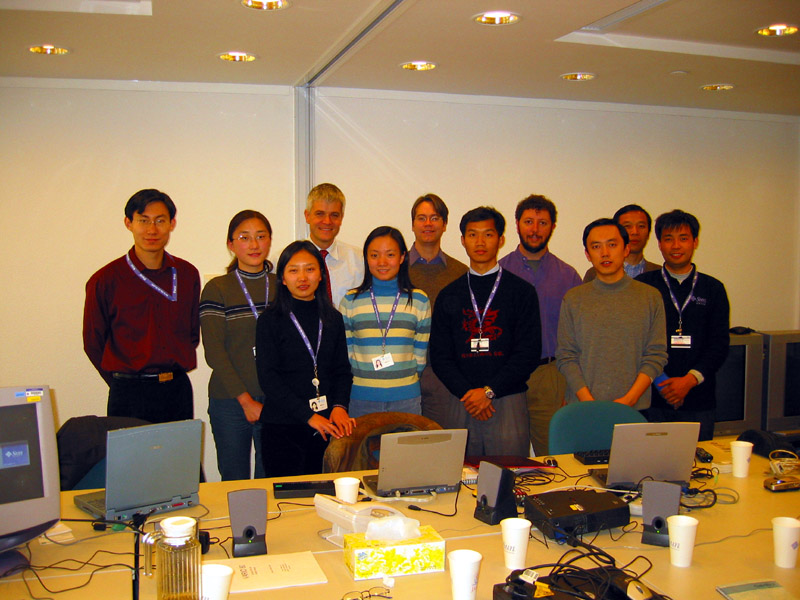

Sun has setup a task force in China to implement the mozilla accessibility on GNOME, up to now the team has 7 members. The email address of the task force is browser-china-atf@sun.com
Team members are:
They are working on the API implementation together with Aaron Leventhal, of course, at the same time they are also working together with the whole mozilla community, because besides implementing these APIs, this task force is also working on general accessbility bugs, please visit the meta bug: Bugs for Sun's Beijing Mozilla Accessibility team to work on, it is used to trace general accessibility bug fixing job of this team.
See them, October 2002:

From the left to the right:
Tiger Feng, Silvia Zhao, Mindy Liu, Thomas Friehoff, Jessie Li, Bill Haneman,
Jay Yan, Peter Korn, Kyle Yuan, Simford Dong, Bolian Yin
More photos